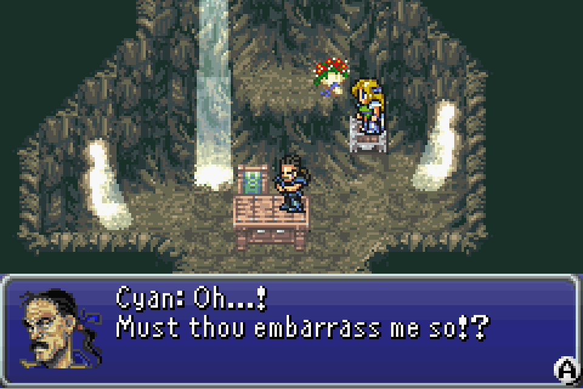
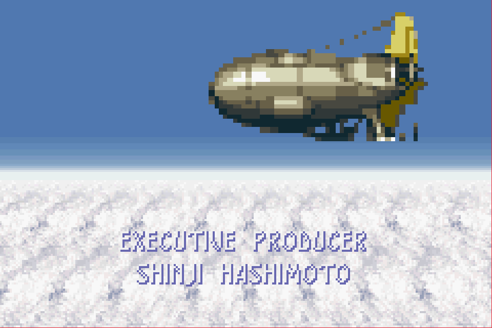
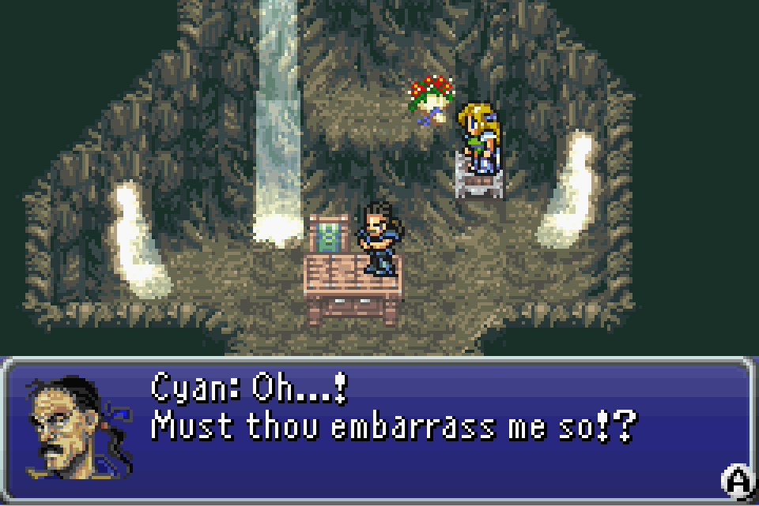
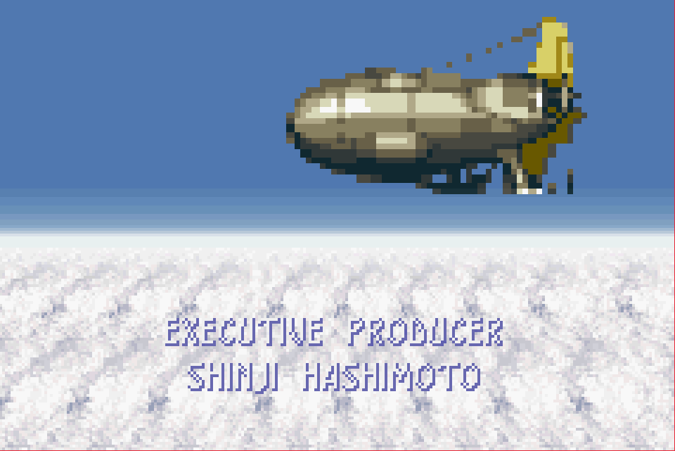

Final Fantasy VI Advance

Complete on 2018-05-3
3 / 5
Release Date: Feb 5, 2007
Meta Score: 92
Screenshots
 



Notes
Final Fantasy VI Advance is the GBA port of the 6th Final Fantasy game (no surprises there). It's the next game after FFV which I played previously, but the Final Fantasy titles are unrelated (aside from some shared elements/themes/gameplay).The game is pretty similar to FFV in a lot of respects, so I'll be discussing what's different in the gameplay and story.
I liked the story of FFVI quite a bit. It breaks away from some of the classic RPG tropes. The game does start out with a character with amnesia, but aside from that it does well. There's a large ensemble cast of characters, and (aside from a few exceptions who barely feature), they share the spotlight. There isn't really a main protagonist, several characters form the core of the story.
What I really liked was the aversion of the classic RPG plot: the psychopathic villain who wants to become a god and destroy the world actually succeeds at the half way point. Then the finale of the game is the party pulling themselves back together and saving a ruined world. This was an interesting twist on the "multiple worlds" that many of the FF games of this era use (like FFV and its 3 worlds). The story gets super dark around the middle too, with Celes, the view point character at the time, attempting suicide. (I believe this scene can actually go a different way, but this was so impactful it seems a shame to leave it out).
Core combat and exploration gameplay is pretty similar to FFV. Jobs are out, and each character has a unique special skill. The first half of the game frequently changes who is in the party forcing you to try out different things, and then the second half gives you freedom to choose your own party once you've re-recruited them. One interesting point is magic. Only a couple of characters can cast magic naturally, but everyone can learn magic from magicite, the crystallized corpses of magical beings called Espers. This gives you a lot of flexibility in teaching any magic to anyone (although only characters with decent magic stats will actually be really effective). These magicites also give little stat boosts on level up allowing you to (in theory) tweak character's stats.
There's a fair bit of customisation to be found with the equipment and relics (unique items that can make big changes to how a character plays - like giving them a jump attack or changing what they can equip). This only really kicks in later in the game however, the early stages you are quite constrained on how the characters play.
Balance seems better than FFV. Bosses generally seemed fair and less inclined to suddenly destroy you. Haste is relegated to second best spell behind quick, which lets you take 2 turns in a row.
This time the game has chilled out a bit with the modes of transportation - there's only one (technically 2) airship(s) which gets you everywhere. This was a lot less confusing that FFV's mishmash. The airship also has funky controls where you actually steer/fly it. There's some depth to them, like changing altitude, that doesn't really matter or get used.
The final twist on the formula is the multiple parties mechanic. In quite a few places you have to split your characters to form 2 or 3 parties you can switch between. This allows some puzzles of the "one person stands on a switch while another goes through a door" style. They never do anything more complex than that though. It also means you are forced to keep multiple characters leveled up/equipped as you can't tell when you'll need more than just a party of 4. In particular in the final dungeon you need 3 full parties which each need to be up to fighting bosses.
The game goes quite open world in the second half after you regain the airship, allowing you to fly around the whole world and recruit people/side quest for magicite in seemingly any order. This works ok, but I felt the pacing of the last third is still off. Right when you want to be finishing the game, it opens up a lot of stuff to do suddenly, and you'll need to do some of it to be prepared for the final dungeon. The final dungeon itself is a bit of a slog, but not as nasty as FFV's. I ended up using the slightly OP Quick+Ultima combo on my magic characters to make short work of it.
Overall, I enjoyed FFVI more than FFV, but I still think it has some issues which could be improved.